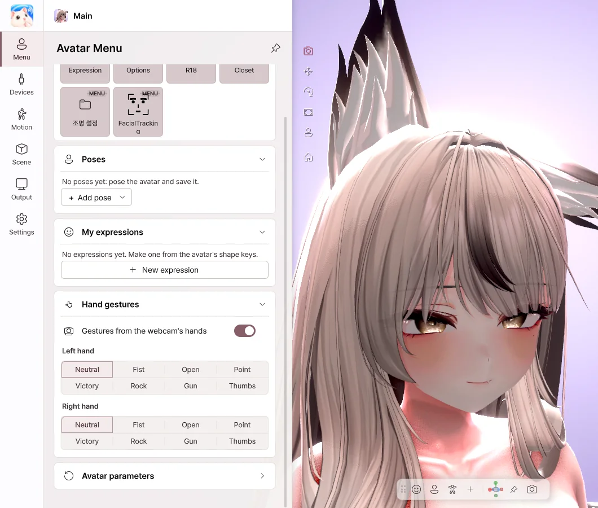

5. Avatar menu
You use your avatar's Expressions menu from VRChat just as it is. Outfit and hair toggles, expression buttons, Radials and Puppets all work exactly as they do in VRChat.
Expressions menu

- Toggle — Switches on and off each time you press it.
- Button — Stays on while you hold it.
- Sub Menu — Opens a submenu. Use Back to return.
- Radial · Puppet — Set a value with a slider or a pad.
Right-clicking an item
- Add to Quick Actions — Places it as a button on the bottom toolbar.
- Set hotkey… — Lets you turn it on with a single key, even while you're in a game.
- Favorite — Use it right away from the top of the menu.
Hand gestures

- Choose left-hand and right-hand gestures to show the avatar's gesture expressions.
- Turn on Gestures from the webcam's hands, and your own hand shapes become the gestures.
Reset to defaults
Click Avatar parameters › Reset to defaults to return the menu values to the avatar's defaults. Values that are saved, such as outfit state, carry over to the next launch.
Quick Actions
Turn actions you use often into buttons or keys. You can add menu items, gestures, camera views, lighting presets and more, and right-click a button to change its name and position.
Hierarchy · Meshes · Shape keys
View your avatar's objects as a tree, just like in Unity, and change them right there.
- Hierarchy — Shows the avatar's objects as a tree. Use the checkboxes to turn them on and off. The eye icon hides an object from view while leaving it on.
- Meshes — Shows every mesh in one list. Use search to find one quickly.
- Click a mesh to adjust its shape keys one by one in the side panel. Values you set yourself take priority over face tracking and avatar animations.
- Reset all at the top returns every mesh to the avatar's original state, and Collapse all closes the tree.
Reset
| Reset | Reset everything | |
|---|---|---|
| What it does | Returns tracking, hand poses and PhysBones to their initial state | All of that, plus outfits · position · camera, back to their initial state |
| How | ⟲ at the top | Right-click ⟲, or Settings › General |